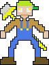

One day, every circle suddenly turned into a square. The evil wizard Todd was responsible for this. The people of Fantasy Land suddenly had to adapt to a whole new way of living. Our protagonist, Bob, refuses to live in this new world and has taken up arms against the evil wizard.
The main character in Squaring The Circle is a farmer by the name of Bob. The day of the event, Bob was eating a pizza when it suddenly turned into a square. Flustered and angry, Bob became determined to exact revenge against that evil wizard Todd.
The antagonist in Squaring The Circle is the evil wizard Todd. The evil wizard, Todd, was shunned from his community at an early age after conducting experiments on live humans. Todd has since long plotted his revenge on the people of Fantasy Land and his plan finally came to fruition after years of research and hard work.